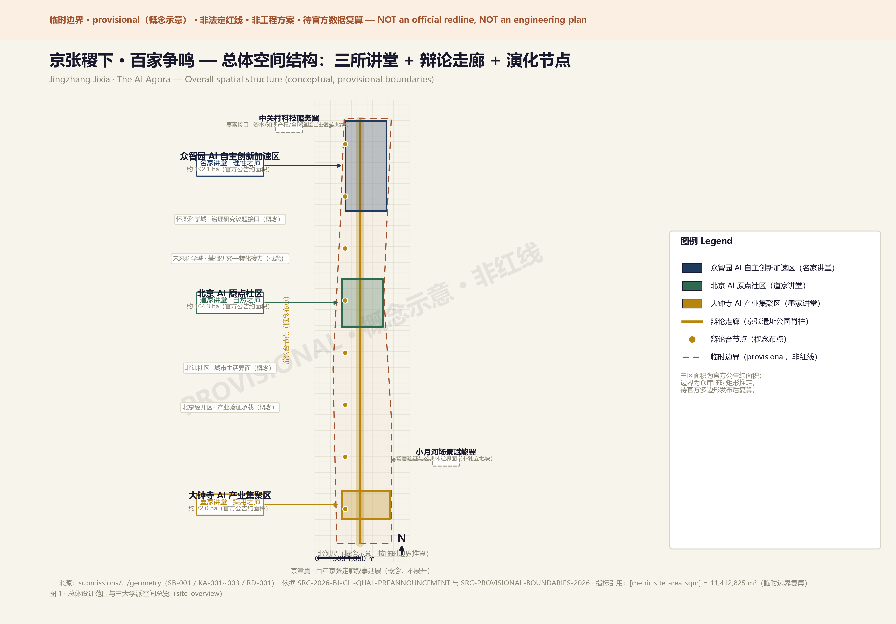
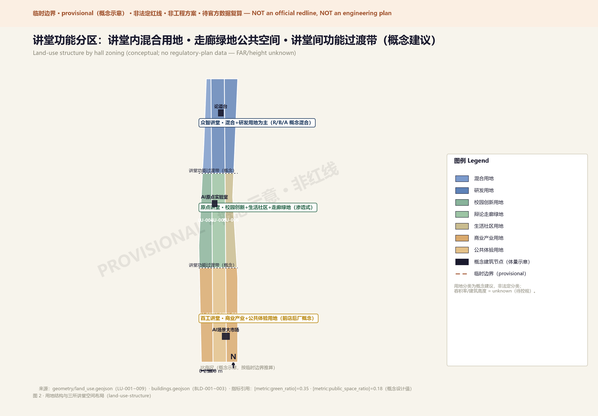

Mobility · Blue-Green Public Space

English counterpart of visual/index.html — Centennial Jingzhang AI Innovation Belt
SELF-CHECKEDready_for_review
Research 43.6 km² = Palace · Overall 11.4 km² = Halls · Key areas 368.4 ha = Arenas. All boundaries provisional.
Zhongzhiyuan (Logician) · AI Origin Community (Daoist) · Dazhongsi (Mohist), linked by a debate corridor.

Thesis 1-3y → Debate 3-5y → Sedimentation 5-10y; append-style evolution.
12 scenario cards (3 verification) · 5 user personas · 3 pilgrimage landmarks.
agent.1 naming · agent.2 cases · agent.3 scenarios · agent.4 landmarks · agent.5 narrative · agent.6 operation.
SITE-PACKAGE · AGENT-TASKBOOK · PROVISIONAL-BOUNDARIES; assumptions: boundaries pending official recompute, regulatory metrics missing.